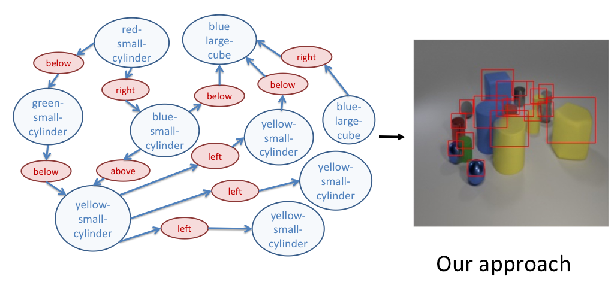
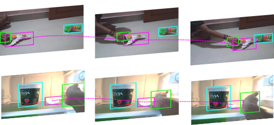

|
Hi there! I'm Roei, a first-year Ph.D. student in Computer Science at Tel Aviv University, working with Prof. Gal Chechik, Prof. Amir Globerson and Prof. Trevor Darrell, and a member of the Berkeley AI Research Lab. I'm also a Machine Learning & Deep Learning Researcher, I have worked at Nexar and Trax Image Recognition in the last 5 years. I graduated Magna Cum Laude from Tel Aviv University with MSc (CS), BSc (CS) and BSc (Physics).
Email / Twitter / Github / LinkedIn / Google Scholar |

|
|
I mainly focus on machine learning models and deep learning methods for video and image understanding using structure (e.g. Structured Prediction). I believe our world is compositional and humans don't perceive the world as raw pixels. Moreover, structured models can enjoy the properties of generalization and inductive-bias, which I find critical, especially at the intersections of vision, language and robotics.
Research Interest:
|
|  |
Roei Herzig*, Amir Bar*, Huijuan Xu, Gal Chechik, Trevor Darrell, Amir Globerson ArXiv preprint , 2019 bibtex We present a novel model which can inherently learn canonical graph representations and can better capture object representation independently of the number of objects in the graph, thus generating images of complex visual scenes and ensuring that semantically similar scene graphs will result in similar predictions. We show improved performance of the model on three different benchmarks: Visual Genome, COCO and CLEVR. |
|  |
Joanna Materzynska, Tete Xiao, Roei Herzig, Huijuan Xu*, Xiaolong Wang*, Trevor Darrell* ArXiv preprint , 2019 bibtex We propose a novel compositional action recognition task where the training combinations of verbs and nouns do not overlap with the test set. We show the effectiveness of our approach on the proposed compositional task and a few-shot compositional setting which requires the model to generalize across both object appearance and action category. |

|
Moshiko Raboh* , Roei Herzig*, Gal Chechik, Jonathan Berant, Amir Globerson Winter Conference on Applications of Computer Vision (WACV) , 2020 bibtex We propose an intermediate “graph-like” representation (DSGs) that can be learned in an end-to-end manner from the supervision for a downstream visual reasoning task, which achieves a new state-of-the-art results on Referring Relationships task. |

|
Roei Herzig*, Elad Levi* , Huijuan Xu*, Hang Gao, Eli Brosh, Xiaolong Wang, Amir Globerson , Trevor Darrell IEEE/CVF International Conference on Computer Vision Workshop (ICCVW) , 2019 (Oral) Code / bibtex We propose a latent inter-object graph representation for activity recognition that explores the visual interaction between the objects in a self-supervised manner. |

|
Eli Brosh*, Matan Friedmann*, Ilan Kadar*, Lev Yitzhak Lavy*, Elad Levi*, Shmuel Rippa*, Yair Lempert, Bruno Fernandez-Ruiz, Roei Herzig, Trevor Darrell Workshop on Autonomous Driving at CVPR , 2019 blog / code / dataset / bibtex We propose a hybrid coarse-to-fine approach that leverages visual and GPS location cues with on a new large-scale driving dataset based on video and GPS data. |

|
Eran Goldman*, Roei Herzig*, Aviv Eisenschtat* , Jacob Goldberger, Tal Hassner IEEE Conf. on Computer Vision and Pattern Recognition (CVPR) , 2019 code / dataset / bibtex We collect a new SKU-110K dataset which takes detection challenges to unexplored territories, and propose a novel mechanism to learn deep overlap rates for each detection. |

|
Roei Herzig*, Moshiko Raboh* , Gal Chechik, Jonathan Berant, Amir Globerson Advanced in Neural Information Processing Systems (NeurIPS) , 2018 code / bibtex We propose a novel invariant graph network for mapping images to scene graphs using the permutation invariant property, which achieves a new state-of-the-art results on Visual Genome dataset. |